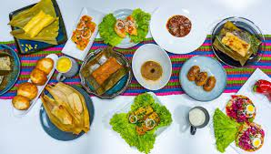
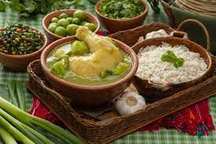
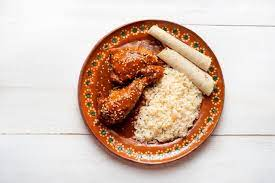
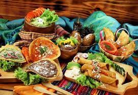

<!DOCTYPE html>
<html></html>
<br>
<HEad>COMIDAS TIPICAS</HEad>
<br><br>
<title>GASTRONOMIA GUATEMALTECA</title>
<link rel="stylesheet" type="text/css" href="estilos.css">
<H1> <center><strong>COMIDAS TIPICAS DE GUATEMALA</strong></center></H1>
<hr>
<br>
<H2>Entendiendo la gastronomía guatemalteca</H2>
<p style="text-align: justify;">Las mejores maneras de acercarnos a la cultura de los países por los que viajamos, es probando su g
    astronomía.
    De esta manera no solo descubrimos nuevos sabores, sino que también podemos interiorizarnos en lo que hay detrás de un plato, 
    como su historia, curiosidades e idiosincrasia local. Además de las comidas típicas que vamos a ver, Guatemala se caracteriza 
    por la producción de cacao, chocolate y café de excelente calidad. Sin olvidar que se trata de un país tropical y muy diverso, 
    con variedad de paisajes y climas, por lo que se puede encontrar tanto frutas y verduras de tierra caliente (como ananá, papaya y 
    maracuyá) como de tierra fría (paltas, güisquiles, ayotes) de exquisito sabor.</p>
      
<br><br>
<p style="text-align: justify;">Para entender la comida típica de Guatemala que se consume en la actualidad, no se puede desconocer su
     historia.
    La gastronomía chapina (como se le dice a lo oriundo de Guatemala) es el resultado del encuentro de la cultura maya con la de los 
    españoles que llegaron en el siglo XVI.Así como en otros aspectos de la vida, el arribo de los españoles fue creando un mestizaje 
    que se ve reflejado
     en la comida. Este fenómeno se dio también en otros países mesoamericanos, haciendo que comparta similitudes con la gastronomía 
     de México, Honduras, El Salvador y Nicaragua.
    Al llegar, los españoles encontraron ingredientes desconocidos para ellos, que no solo implementarían para nuevos platos sino que 
    extenderían por todo el mundo, como el cacao, la vainilla, el tomate, la palta (aguacate) y el maíz.
    Es justamente el maíz el ingrediente central en la gastronomía de Guatemala, consumido en una gran variedad de preparaciones como 
    en los típicos tamales.
    Su ubicación geográfica tropical, los kilómetros de costa al Pacífico y al Mar Caribe, su variedad de climas y la influencia 
    africana, son todas condiciones que dan como resultado los platos que vas a encontrar viajando por Guatemala. </p>
    <center></center>
    <h3>EL SIGUIENTE VIDEO TE ESEÑARA LAS COSTUMBRE Y COMIDAS TIPICAS DE GUATEMALA</h3>
    <a href="https://www.youtube.com/watch?v=ZxvDmlWPWUY">ENLACE<a>

    <P>QUE TIPOSDE COMIDA TE GUSTAN LLENA EL SIGUIENTE FORMULARIO:<p>
        <h1>FORMULARIO</h1>
<form style="text-align: center;">
<P><Label for="NOMBRE">NOMBRE: <input type="text" id "NOMBRE"></Label></P>
<P><label for="APELLIDOS"> APELLIDOS: <input type="text" id="APELLIDOS"></label></P>
<p><label for="comida"> COMIDA FAVORITA:<input type="text" id="comida"></label></p>
<P><label for="tiempo"> TIEMPO DE COMIDA FAVORITO: <input type="text" id="tiempo"></label></P>

<P><label>elige un tipo de comida:
<select id="comida">
<option value="Jocón">Jocón</option>
<option value="Pepián">Pepián</option>
<option value="Plátanos en mole">Plátanos en mole</option>
<option value="Kak 'i">Kak 'ik</option>
<option value="Tamales colorados">Tamales colorados</option>
<option value="Paches">Paches</option>
<option value="Chuchitos">Chuchitos</option>
</select>

</label></P>
<button type="submit">ENVIAR</button>
</form>


<br><br><br><br>
<h4><strong><em> A ontinuacion se mostrara un cuadro con los los tipos de comidas tipicas de guatemala </em></strong></h4>
<style>
    table, th, tr{
        border : 1px solid black}

</style>
<table>
<tr>
    <th>Comidas tipicas</th>
    <th>Lugar de origren</th>
    <th>Precio aproximadamente</th>
    <th>Eventos destacados</th>
</tr>
<tr>
    <th>Pepián</th>
    <th>Guatemala</th>
    <th>Q50 - Q100</th>
    <th>Celebraciones familiares</th>
</tr>
<tr>
    <th>Kaq'ik</th>
    <th>Cobán</th>
    <th>Q40 - Q80</th>
    <th>Festival de la Feria Cobán</th>
</tr>
<tr>
    <th>Tamales		 </th>
    <th>Todo el país</th>
    <th>Q5 - Q15</th>
    <th>por unidad	Día de Todos los Santos</th>
</tr>
<tr>
    <th>Jocon</th>			
    <th>Petén</th>
    <th>Q60 - Q120</th>
    <th>Festival de las Culturas</th>
</tr>
<tr>
    <th>Caldo de Res</th>
    <th>Guatemala</th>
    <th>Q30 - Q60</th>
    <th>Feria de Jocotenango</th>
</tr>
<tr>
    <th>Chiles Rellenos</th>
    <th>Antigua</th>
    <th>Q25 - Q50</th>
    <th>Semana Santa</th>
</tr>

</table>



    <br><br><br><br><br><br><br>